Albo Gator
The young albino alligator at the center of the story.

Children’s Book Character Design
Albo Finds a Home was created for author Dennis R. LaPoole and became ARTIST53’s first published illustration assignment. The project follows an albino alligator searching for belonging through a cast of expressive characters and hand-built environments.
View The ArtworkBack To Characters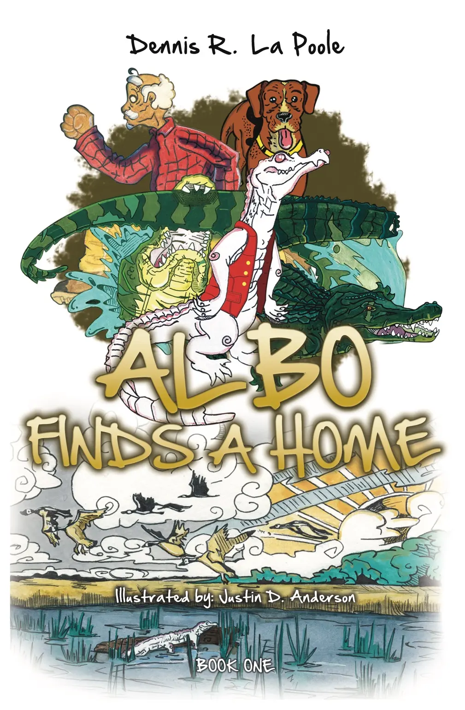
Meet The Cast
The young albino alligator at the center of the story.
A distinctive elder character within Albo’s world.
Gheechie Pank’s loyal friend and dog.
The large alligator who attacks young Albo and accidentally bites off his own tail.
Character Development
Pencil studies established the anatomy, expressions, poses and relationships between Albo, Gheechie Pank, Teesee the dog, and Big Bro.
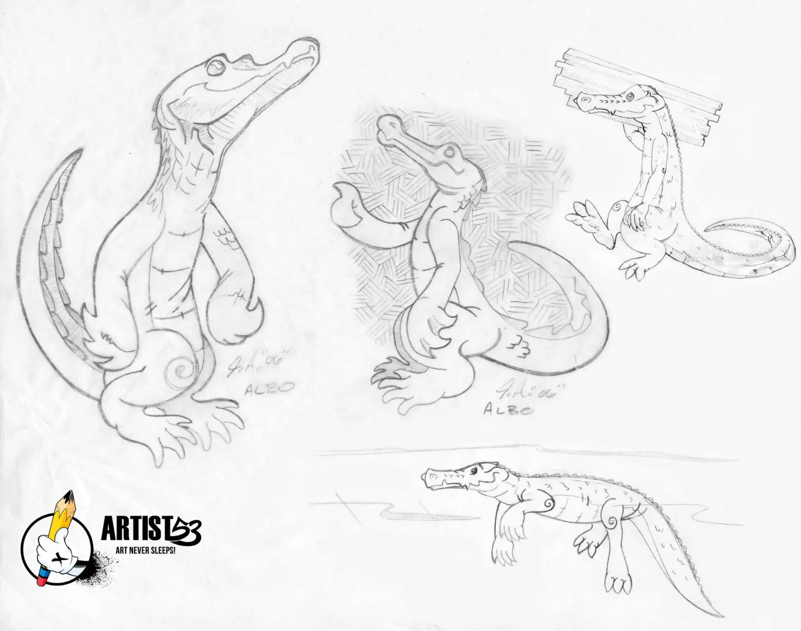
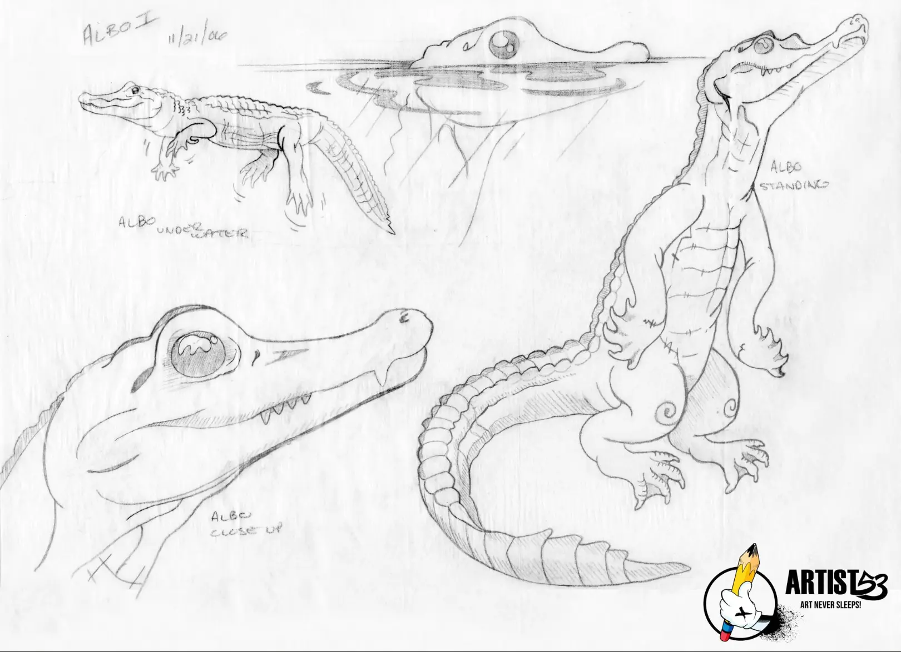
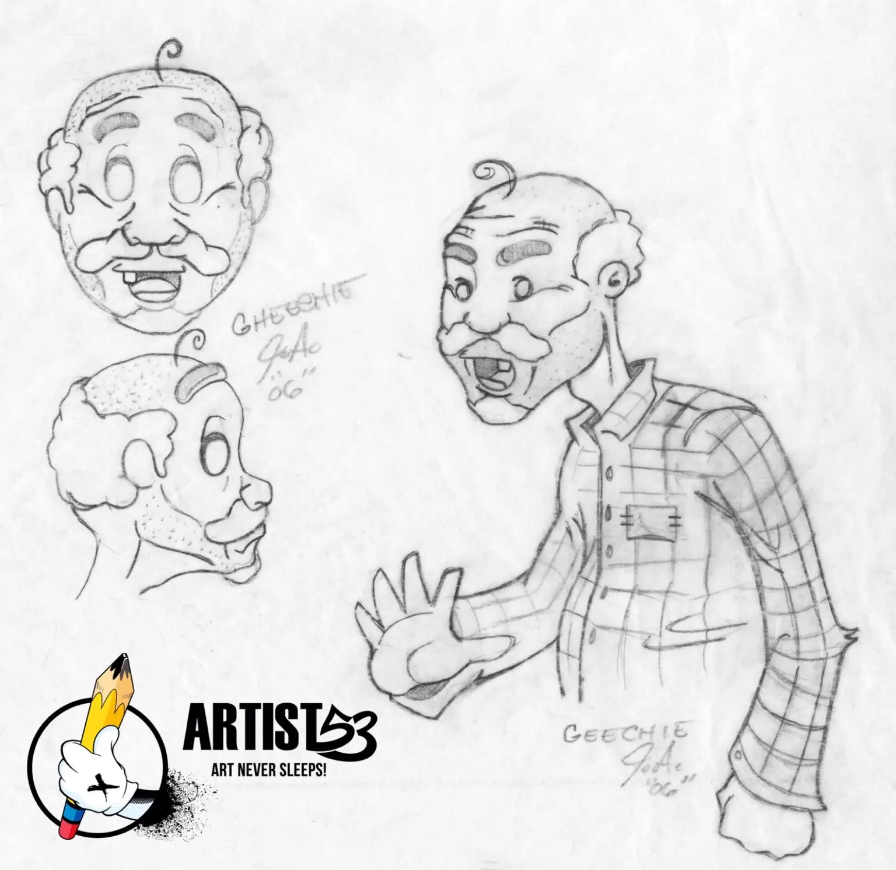
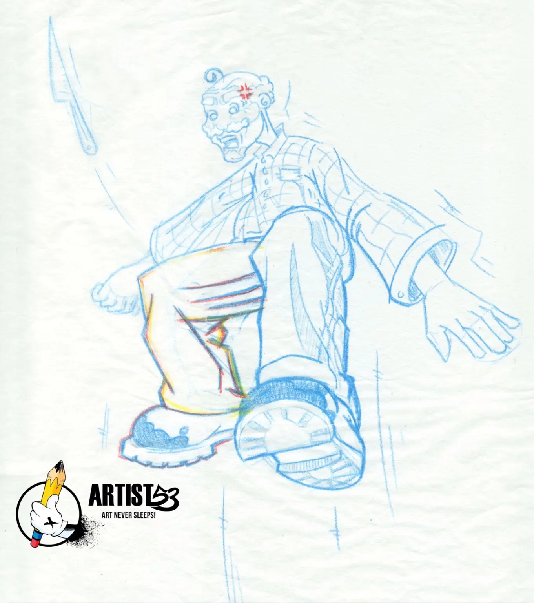
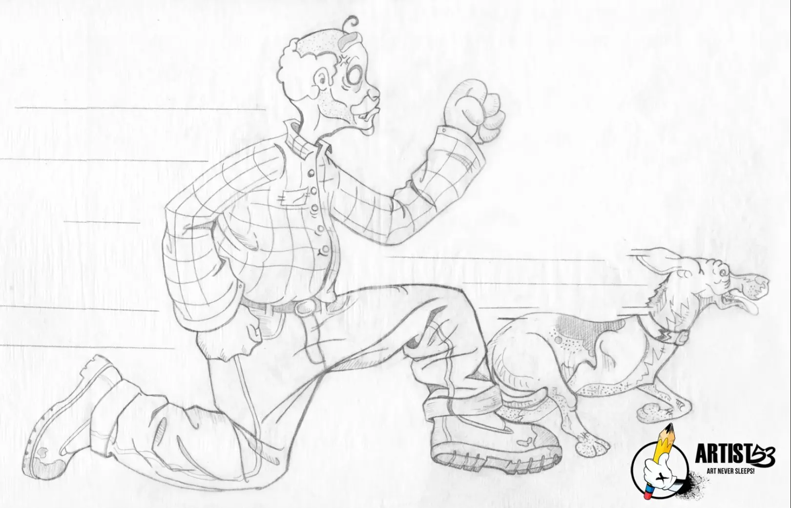
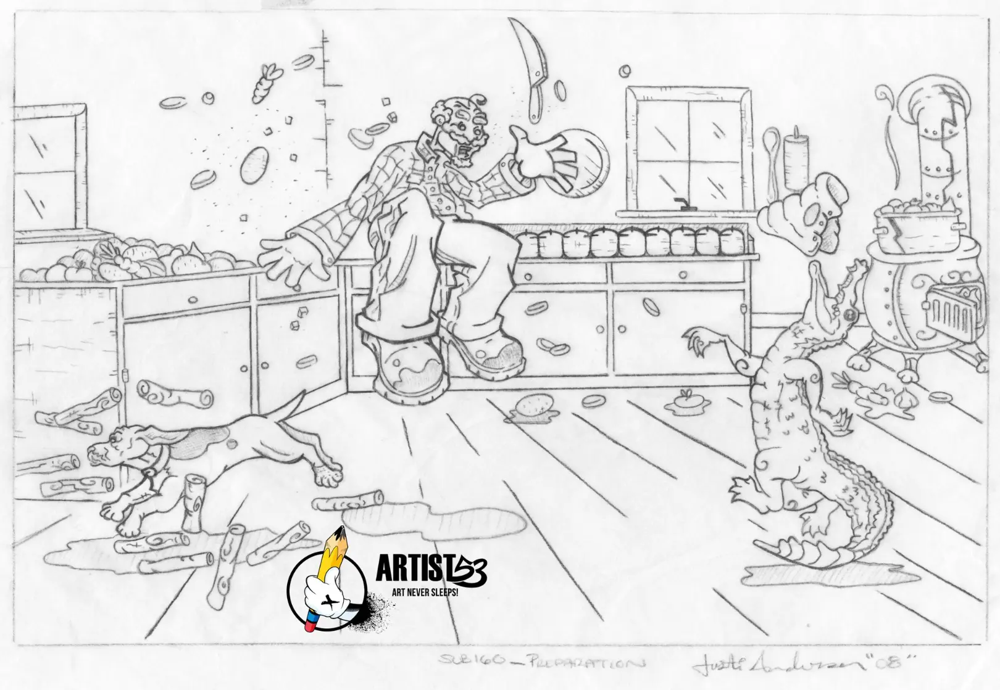
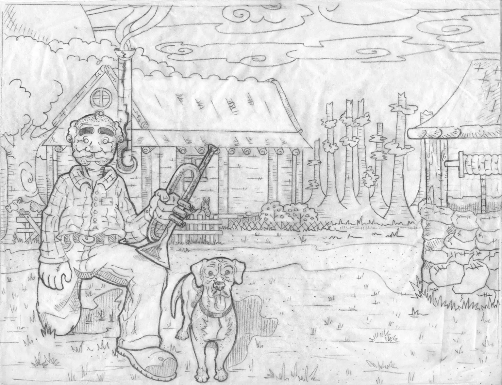
Traditional Illustration
The finished Albo Gator scenes were painted traditionally with watercolor, scanned into the computer and prepared digitally for presentation and publication.
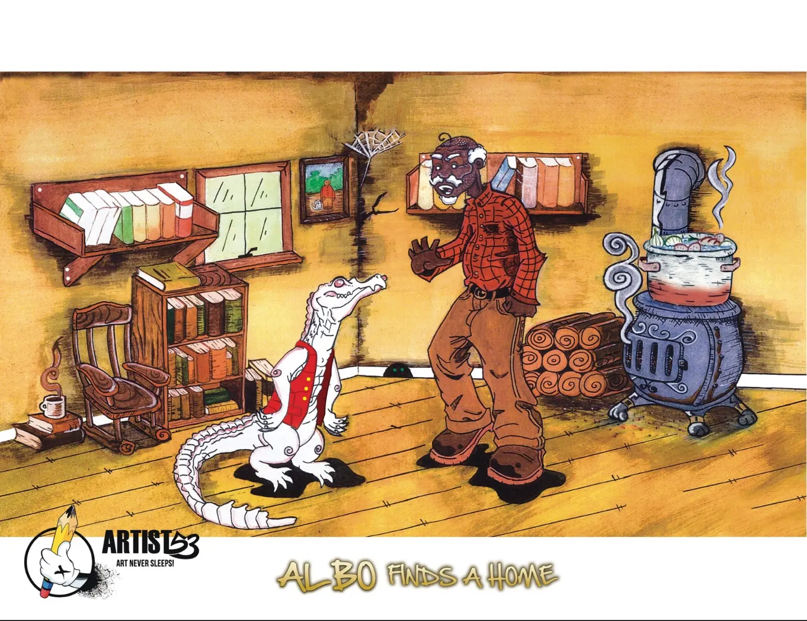
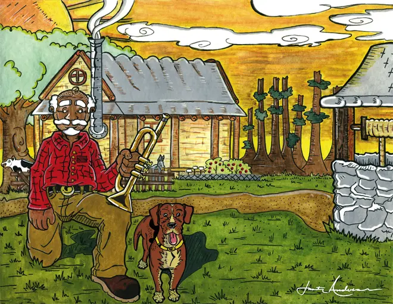
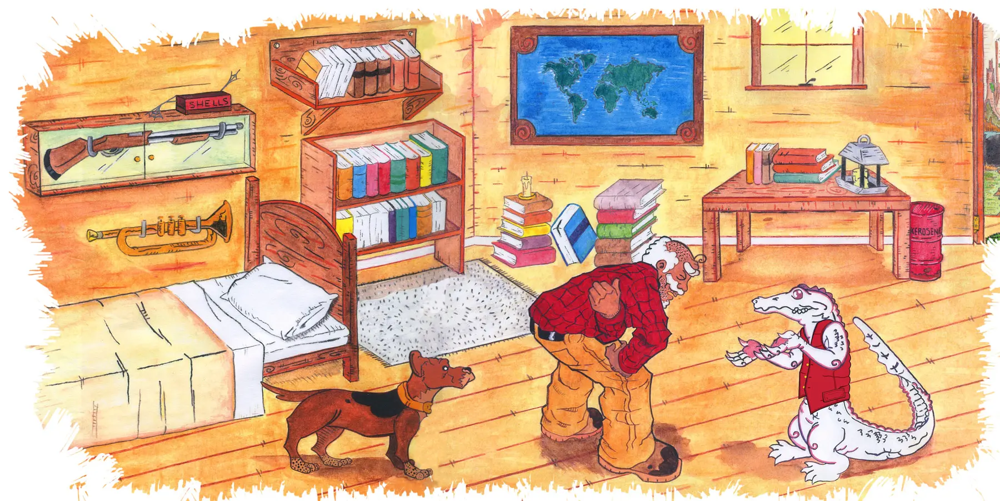
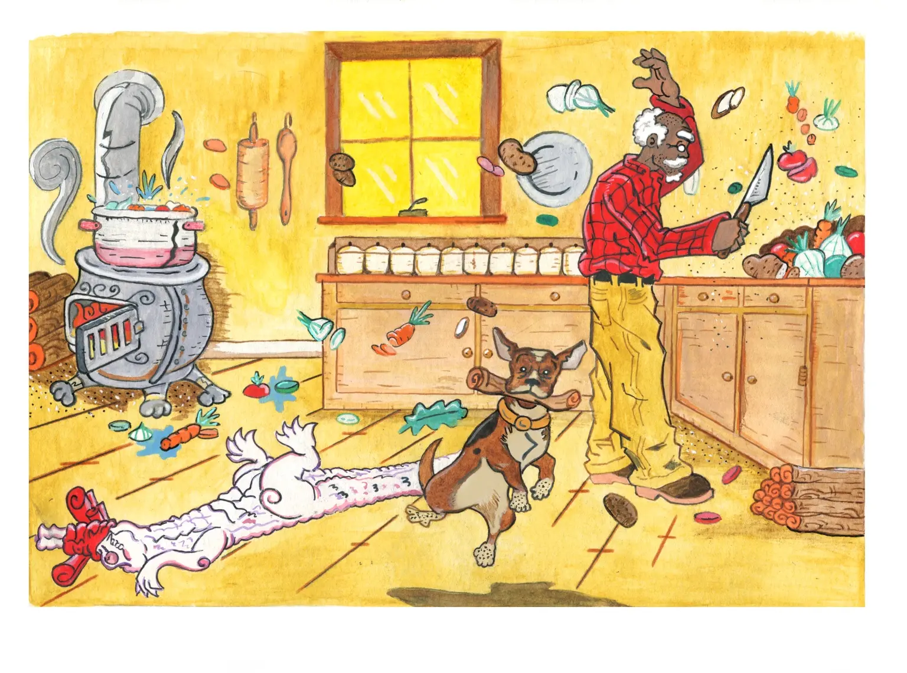
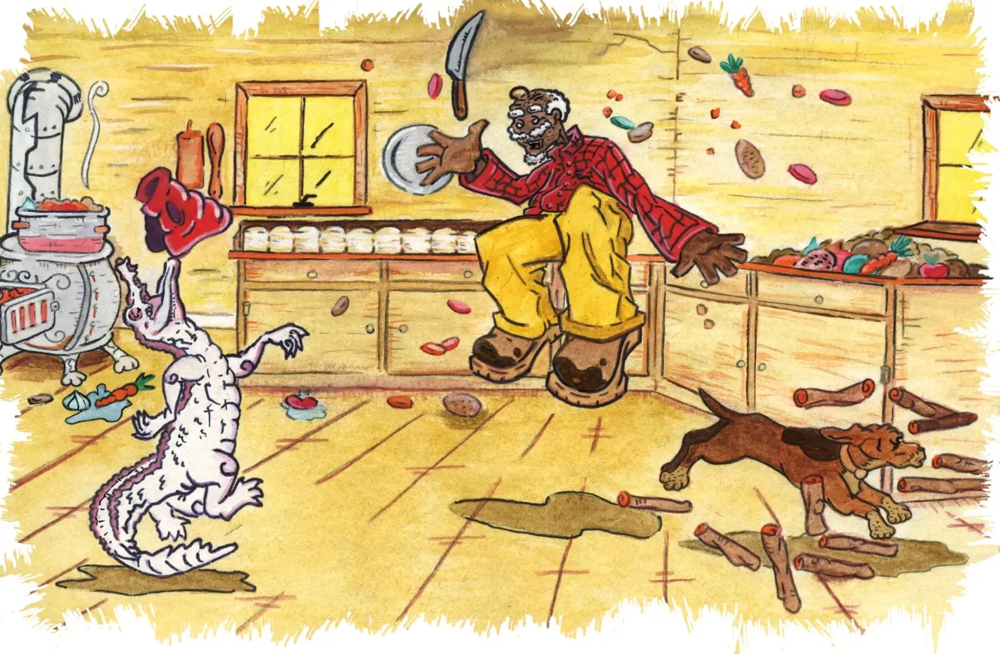
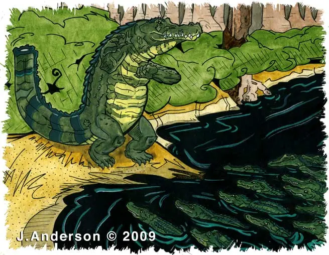
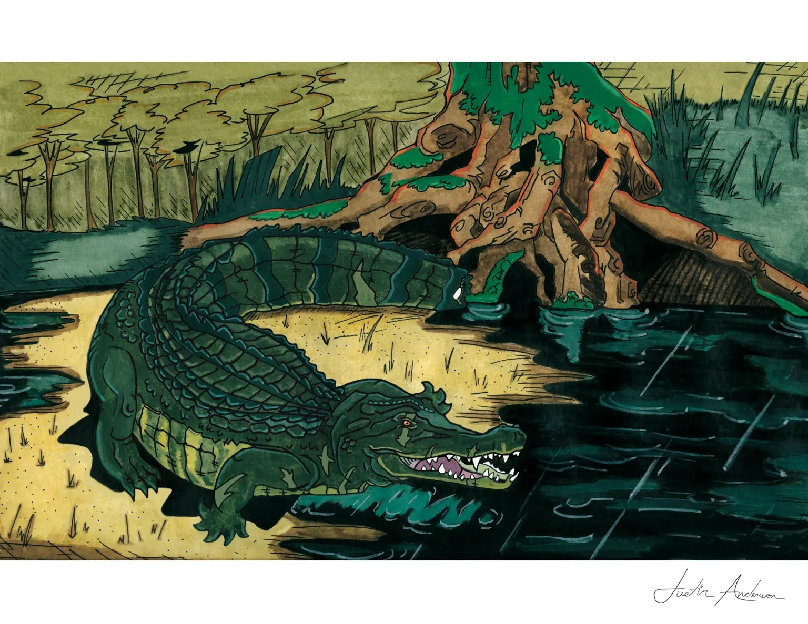
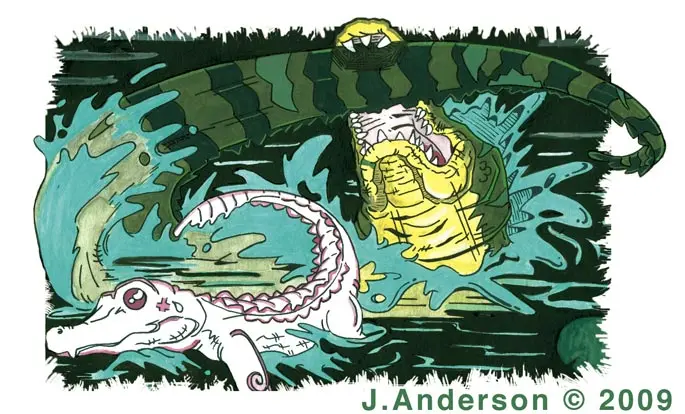